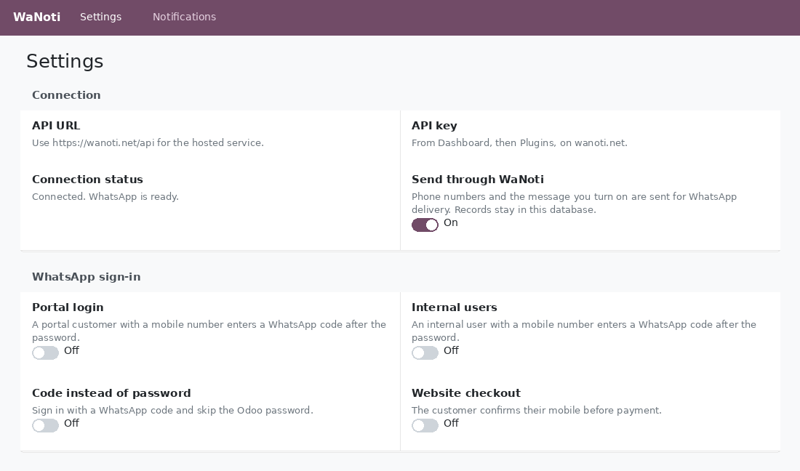
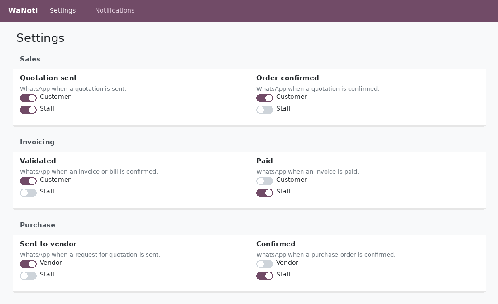
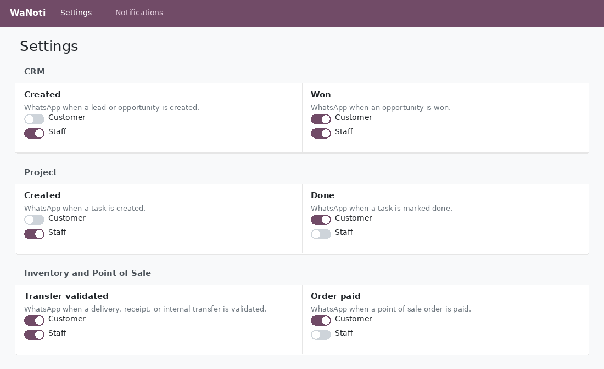

WaNoti sends the events you choose through the company's own WhatsApp number. Published for Odoo 17, Odoo 18, and Odoo 19. Install the series that matches the database. The technical name is wanoti.
Use it on Odoo.sh or on your own server. Odoo Online cannot install this module.
Paste the API URL and API key, then test. The result stays on the settings page.
Sales, invoicing, purchase, CRM, project, inventory, point of sale, recruitment, time off, and maintenance. A section appears only when that app is installed.
Each event has its own switches. They all start off. Private chatter such as Discussions and Notes is not listed.
Portal login, internal login, a code instead of a password, and website checkout. Each one starts off.
The settings page opens with data sharing, the API connection, and the WhatsApp codes. Nothing is sent until data sharing is on and an event or a code is turned on.
If WhatsApp is disconnected, password login and checkout continue. A code-instead-of-password login asks for the password.


Quotation sent and order confirmed can use the WaNoti message templates. Invoices notify on validation and payment. Purchase orders notify the vendor, the buyer, or both.
Customer means the partner on the document. On a purchase order that switch is the vendor. Staff is the salesperson or the responsible user.
Opportunity created, stage, won, and lost. Task created, stage, and done. A validated delivery or receipt. A paid point of sale order.
Recruitment, time off, and maintenance are on the same page when those apps are installed. Every switch still starts off.

Installing another app later adds that app's section the next time Settings is opened. The new switches start off.
Support: support@wanoti.com